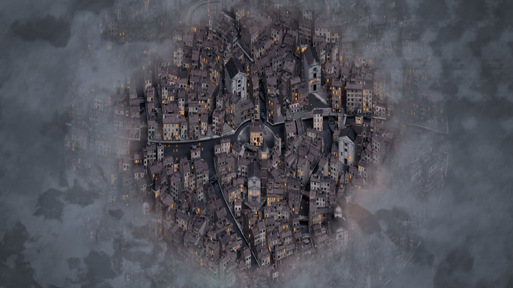

Against the Dream
The outer gods did not conquer the world. They fell asleep across it.
A turn-based roguelike · in development

The outer gods did not conquer the world. They fell asleep across it.
A turn-based roguelike · in development